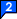
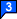
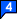

simple map wizzard
- navigate to your area of interest
- place some markers and drag them to their desired position (optional)
- copy image tag or press "show map in new window"
- done!
makers
click or drag to add
  


map size
x pxshow map
To create a corresponding static map, simply use following <img> tag: